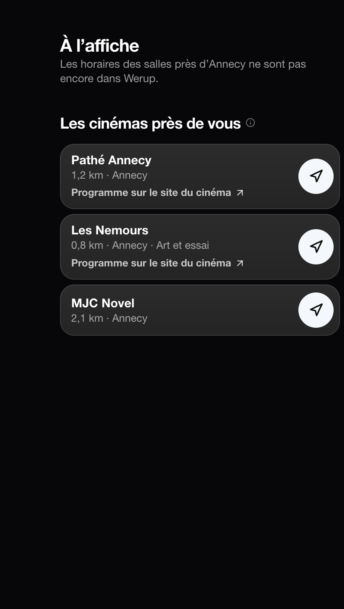

Cinema — le repli « cinemas pres de vous » (sans AlloCine)
24/11/2026 · Le nouveau bloc de repli, hors d'un territoire a seances (exemple : Annecy) : fiche + lien programme, « Y aller » pret pour Apple Plans, attribution OpenStreetMap en petit « i ». Rendu avec le CSS reel de l'app et des donnees d'exemple (maquette, pas la page en direct).
